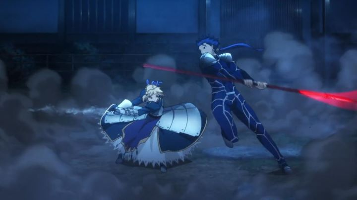

Disclaimer: This review covers the 2014 series "Fate/Stay Night: Unlimited Blade Works," consisting of 25 episodes, plus a 10-minute OVA. Not to be confused with the 2010 film of the same name.My first exposure to the legendary visual novel and anime franchise "Fate/Stay Night" was through the 2011 anime "Fate/Zero," a prequel. To this day, it's dark fantasy, mature characters and strong animation leaves me in awe. I've since seen the other anime adaptations of the original "Fate/Stay Night" story, including the 2006 series and the 2010 film by Studio Deen. They weren't spectacular, but it was understandable why it helped extend the fanbase.Studio Ufotable's handling of "Fate/Zero" and "The Garden of Sinners" was so strong, it's not surprising that they would take a chance in adapting "Fate/Stay Night" a third time. I never played the original game, but Wikipedia claims it has three main 'arcs' that retell slightly different versions of the same story. The 2006 series took some elements from all arcs, but primarily from the first, labeled the "Fate" storyline. Ufotable's new series would be dedicated to the second version of the story, called "Unlimited Blade Works," and would therefore be a new and distinct adaptation.... that happens to follow the exact story as Studio Deen's 2010 film, also called "Fate/Stay Night - Unlimited Blade Works." Which makes the existence of Ufotable's series a confusing one. Despite being only two hours, I didn't feel that the 2010 film skipped over any important information, or felt particularly rushed. By comparison, the 2014 series, at 6x the runtime, feels slow. This is highlighted even more because of the sense of deja-vu, having seen the same essential story three times now, this particular version twice.I wouldn't necessarily recommend the 2014 series for newcomers either, due to some questionable editing and pacing choices. "Unlimited Blade Works (TV)" starts with episode 0, a double-length episode that focuses on Rin's perspective at the start of the Holy Grail War. For fans of the game or the previous adaptations, this feels fresh and appreciated. But a new viewer will likely be a bit lost. Even episode 1, which starts properly from Shirou's (the main character) perspective, doesn't feel quite right, as "Fate/Stay Night"'s universe is dense and difficult to introduce in any form. Unlike the previous adaptations, there are several deliberate callbacks to "Fate/Zero," again a boon for fans who know the material, but do doubt confusing for a newcomer. At the very least, it is strongly recommended that you watch "Fate/Zero" before watching this particular adaptation, and ideally, at least one of the previous adaptations or the original game, if not a quick Wikipedia read of the base premise. If you haven't done all of that, I would immediately recommend tracking the older adaptations instead.Anyway, the basic premise is that historical legendary heroes are summoned by present-day wizards to fight in a deadly war for the Holy Grail, a cup that can supposedly grant any one wish. Shirou Emiya is a teenager with secret magical abilities, despite not receiving any real training or coming from a magical family, and when coming across a Servant's fight (and therefore needing to die to have witnessed this secret ritual), he accidently summons his own hero, a blond woman with armor and a sword of the Saber class, to defned himself. Like it or not, he's now one of seven participants of the Holy Grail War. Aside from not wanting to die, when he realizes that dangerous mages are in the fight, he agrees to take the War seriously to prevent the Grail from falling in the wrong hands. Rin Tohsaka is a proper mage, a girl about the same age as Shirou and from the same school, and despite being in the War herself, she agrees to work with Shirou as an ally to show him the basics. Rin's servant is Archer, a mysterious tanned hero unaware of his own identity. While the "Fate" storyline focused mainly on Shirou and Saber, the "Unlimited Blade Works" arch is more focused on Rin and Archer, so much so they could be seen as the real main characters (since it was a visual novel, these arcs tied into whether you saw Saber or Rin as your main romantic interest). Arguably, it's the better story of the three possible arcs for it's character development and drama.Generally, the show is fun to watch, but struggles with pacing. There are a couple instances where a single episode takes up twice the length (about 45 minutes), when there was a clear middle point to cut them each. Exactly why some episodes were double-length (one was simply a romantic date bookended by a fight), and others not, is unclear. While "Fate/Zero" was able to elegantly juggle the several mages and their servants in the story, "Unlimited Blade Works (TV)" seems to completely forget about some of the participants for the majority of the series, making it jarring when they reappear near the end. The show tries to extend the story content, sometimes effectively, sometimes not; there was no particular reason to witness Rin investigating abandoned buildings alone multuple times. Staring teenagers as the heroes, "Unlimited Blade Works (TV)" feels much lighter in tone than "Fate/Zero," despite a few instances of extreme violence and gore. Gen Urobuchi, the famously dark writer and director, wrote "Zero" but not "Blade Works," and it's clear, regardless of Ufotable's attempts to link the two. Saber's characterization is disappointing in comparison to her strong personality in "Zero." And even if there is a reason for it, it's frustrating to see Shirou, a mortal, get stabbed and sliced by fantastical heroes, only to be bandaged up again and again at home and immediately head out again. By the second half, the show dissolves into warriors fighting each other, yelling about why the other's ideals are wrong while swinging a sword that causes the ground to shake. By any comparison, this feels like a juvenile fantasy-shonen action series, with extra blood.  It's not entirely a fruitless story. The arc between Archer and Shirou is a well-written conflict. Rin as the female and romantic lead comes across as bipolar, switching on a dime from wanting to kill or help Shirou, from being calm and intelligent, to jealous or annoyed, to fawning over an obvious crush in Shirou. Not exactly great character writing, but it's great fun to watch her, and I was grateful to see Shirou admit his love for her fairly early on, not beating around the bush with their relationship. Generally, the show still works well as dark high-fantasy, action and romance. Despite a bizarre final epilogue episode (and alternative good ending OVA), the ending feels complete where it ends.Speaking of action, we must talk about the animation. I was surprised with my disappointment; during the majority of scenes (of standing or talking), the animation is noticably average, making it clear that it's a television production, a bit of a letdown from the more theatrical quality of animation present in "Fate/Zero." Alternatively, the action scenes, of which there is a greater quantity, are improved, flashier and with more movement. The entire "Fate" franchise had some good action scenes, but as of 2014, "Unlimited Blade Works (TV)" was able to top them all. Visually, some character designs still look strange and dated (Lancer's blue suit and Archer's red dress will never feel right to me, distinct as they are), but better and more recognizable than most other anime, and Ufotable does what they do best with environments, making use of gradiant sunsets, lens flares, reflective glass, 3D environments and camera movements, and other tricks. It's generally a very pretty show, particularly for anime standards.The music is possibly the strongest highlight. Not primarily done by Yuki Kajiura like in "Fate/Zero," it feels different but familiar under Hideyuki Fukasawa's hand, still majestic and powerful. The opening and ending themes sometimes make clever callbacks to "Fate/Zero," either by using the same artists or a similar melody, which will no doubt win over "Fate/Zero" fans quickly even if they don't like the main characters. The English dub gave me mixed feelings... it's good and appropriate, but doesn't sound as cool as the actors in previous dubs for the franchise. It also doesn't hold a candle to the excellent Japanese dub, which I strongly recommend even for English speakers. I felt similarly for "Fate/Zero," but somehow the difference in voice delivery wasn't so pronounced. Generally, Ufotable did well with "Unlimited Blade Works (TV)," if only because of a strong sense of style, and successfully giving a sense of gravity and importance to the scale of the story. But it also feels like Ufotable slacked off a bit, a little too confident in the source material's fanbase and the money they would make, regardless of their output. And most of the issues I have with the series comes from the original visual novel, which is really just a strong premise with poor writing, impressing players for it's multiple alternate storylines that build off each other. The writer's universe has vastly improved since then in both story and art design, and it seems silly to still hang on to an old franchise for nostalgia, for a third time nonetheless. All that being said, no anime fan's catelog is complete without watching at least one of the adaptations. If you've seen "Fate/Zero," this is probably the one you want. But as of 2019, both "Fate/Zero" and "Unlimited Blade Works (TV)" have gone out of print in North America (Aniplex USA released limited-edition-only Bluray sets, with soundtrack discs included... the texture of the "Unlimited Blade Works (TV)" boxes isn't as detailed, and is more expensive simply because of the popularity of the new series, but otherwise were nice packages). If streaming isn't enough, you might want to import the 'standard edition' Japanese "Fate/Zero" release, slightly cheaper than America's release and with the English dub, although no such release has appeared yet for "Unlimited Blade Works (TV)." For these reasons, among other issues, I have no qualms recommending the original series or 2010 film over this version. Extravagance is nice, but if it's pointless, then sometimes a cheaper knock-off can be just as good, if not better in certain situations.
- "Ani" More reviews can be found at : https://2danicritic.github.io/ Previous review: review_Fate_-_Stay_Night_-_Unlimited_Blade_Works Next review: review_Fate_-_Zero